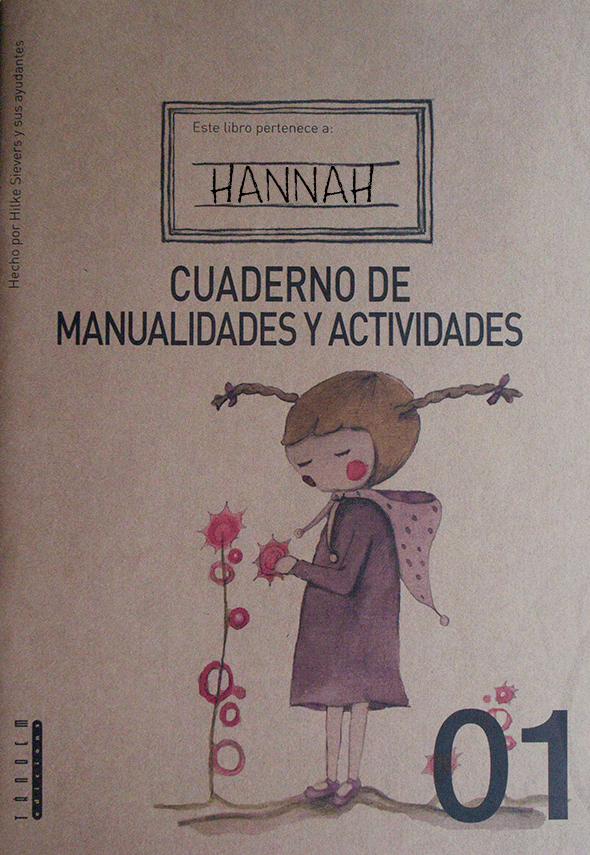

Dieses Bastelheft möchte, dass DU der Autor aller Basteleien bist, die es erklärt: Für mehr Information
Este cuaderno de manualidades quiere que seas Tu el Autor de todas las manualidades que te va a enseñar : Aquí tenéis mas información
This booklet full of crafts wants YOU to be the author of all the crafts that are inside:Here you have more information